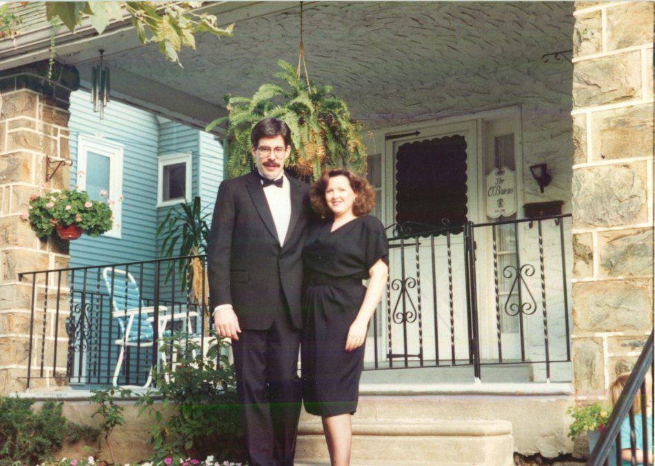

The Front Porch · Philadelphia, 1991
Wills Eye Hospital · A Life in Full
The room I had wanted to be in. The training that defined the rest of the working life. And the man, in a hallway, who gave me the thumbs-up I did not yet understand.
A Life in Full · Chapter Three
Wills Eye Hospital was the room I had wanted to be in. Not Wills specifically — not at first — but a room like it. A room where the diagnosis is made, the surgical plan is drawn, the decision lands on the surgeon and not on someone downstream of the surgeon. I had walked away from a good pharmacy job at Children's Hospital in Pittsburgh because I had finally understood that I wanted to be that person, not the person executing on his orders. Jefferson Medical College was the door I went through to get there. Wills Eye was where I hoped to come out.
The numbers were not encouraging. The year I applied, there were over nine hundred applicants for ten positions. The math is not subtle. It tells you, before you even sit down to write the personal statement, that you are almost certainly not the person this is going to work out for. I knew it when I applied and I knew it when I drove down for the interview, and I will admit, freely, that part of me had already begun to make peace with the idea that this would be the dream that got close and did not quite happen.
What I did not know — what nobody tells you, because nobody yet had — was that the decision had, in a quiet way, already been partly made.
Jefferson students had a relationship with Wills. Through that affiliation we were granted interviews, and the night before the interviews there was a cocktail party — the kind of evening where the senior faculty come around with drinks and the applicants try to seem like the kind of person who belongs in the room. I was not, at that moment, the kind of person who believed he belonged in the room. I made a kind of peace with it by directing most of my attention toward the food. Nancy, my wife, was pregnant with our son Timmy at the time. We both, as I have since pointed out, had good reason to eat well.
What I want to say honestly is that I was not strategic about that evening. I was not networking. I was a tired medical student with a pregnant wife at the end of a long day in a city far from home, eating shrimp at a hospital cocktail party because the shrimp was free and the chances were slim. There is a version of this story where I worked the room. That is not what happened.
The next morning I sat in a hallway outside the interview room, waiting my turn. A man came out of the room I was about to go into — a third-year resident named Andrew Michael, who I knew slightly from a rotation I had done at Wills earlier that same year as a Jefferson senior medical student. He caught my eye. He gave me a thumbs-up. He kept walking.
I did not know what the thumbs-up meant. I assumed it was a kind gesture, a fellow human wishing me well in a moment of obvious nervousness, and I tried to take it as encouragement and went into my interview. The interview went, by my honest assessment, fine. Not extraordinary. Fine.
Some weeks later I learned that I had been selected.
"He had not been asked to come in and speak. He simply remembered, and he showed up."
And it was only later still — years later, in conversations and letters and the quiet way these stories accumulate — that I learned what had actually happened in that room before I walked into it. Andrew Michael had gone before the selection committee and told them about a patient. About an ER shift earlier that year, when a Jefferson senior medical student had been rotating through Wills, and a patient had come in whose medication regimen had been quietly written down wrong. The diuretic and the antibiotic had been reversed in dosing — the patient was taking the diuretic three times a day and the antibiotic only once. It was the kind of error that could have hurt someone. The student had noticed it, mentioned it without making a thing of it, and they had gotten it corrected. The student was me. I had moved on from the moment within ten minutes, the way you do during rotations — you see a thing, you act on it, you get to the next patient. I had not thought of it again.
Andrew had. And on the morning of my interview, later that same year, he had walked into the room where ten of nine hundred applicants would be chosen and he had told the committee about that medication catch. He had not been asked to come in and speak. He simply remembered, and he showed up.
The thumbs-up was Andrew Michael walking out of a room having just done something for me that I did not know he was doing.
I have spent more than thirty years thinking about that morning, and the thing I keep arriving at is this: Andrew Michael did not have to do that. There was no mechanism that required it. The selection committee was not going to ask him whether any current resident had a recommendation about any particular applicant. He was a third-year resident in one of the most demanding training programs in American medicine, and he had a thousand other things to do that morning. He chose to walk in.
He chose to walk in on behalf of a person he had worked with briefly, earlier that same year, who had done something small and right in the middle of a busy shift. He had filed it away. He had remembered. And when the moment came that the small right thing could be put into the scales for that person, he put it in. That is a particular kind of generosity, and the longer I have practiced medicine the more I have understood how rare it is. People are busy. People forget. People are protective of their own time and their own credit. Andrew was none of those things on the morning of my interview.
What I have also come to understand is that the decision could have gone the other way without his testimony and I would never have known the difference. I would have gotten my rejection letter, applied somewhere else, ended up at some other program, lived some other professional life. The whole shape of the thirty years of cataract surgery and corneal disease and patients in Jamestown chairs was, in a real sense, decided by a man who chose to walk into a room without being asked. The thumbs-up in the hallway was the most important hand gesture of my professional life, and I did not understand it for years.
I have not, in the years since, found an adequate way to thank him for what he did. He would, I suspect, wave it off — he is that kind of man. But I want it written down somewhere that on a morning in 1989, in a hallway in Philadelphia, a third-year resident named Andrew Michael did a kindness for a tired Jefferson student he barely knew, and that kindness is the foundation under thirty years of work and several thousand patients and the entire shape of a life. There are not many gifts of that magnitude. I know, when I receive one, to keep saying thank you for as long as I have words.
The three years that followed were the forge. An ophthalmology residency at Wills is concentrated and exacting in a way that is hard to convey to anyone who has not done it. Cataract surgery in volumes you could not get anywhere else. Retinal disease, glaucoma, corneal transplantation, pediatric pathology, neuro-ophthalmic emergencies in the middle of the night. You arrive a physician and you leave an ophthalmologist, and the difference between those two things is what those three years are for.
The hospital itself was its own kind of teacher. Wills had been founded in 1832 through the bequest of James Wills Jr., a Philadelphia merchant who had wanted the city to have a hospital for the eyes, and the institution carried the weight of that history. You could feel it in the corridors. You could feel it in the surgical observation room, watching a senior attending do something with a phaco needle that would take you a decade to imitate. You could feel it in the volume — the sheer number of patients and the sheer variety of pathology — that meant by the time you graduated you had seen almost everything that human vision could go wrong with, and you had operated on a great deal of it yourself.
The city was its own thing. Philadelphia in those years was the first great American city in the literal historical sense — the Constitutional Convention, Independence Hall, the Liberty Bell — and it was also a city of stone rowhouses and front porches and neighborhoods that had kept their shape since the photographs your grandparents might have taken. To live in Philadelphia is to live inside American history, even when you are walking to the corner for milk.
The photograph that opens this page is from one of those evenings. The tuxedo and the front porch and the sign on the door — The O'Briens, Est. 1988 — suggests something the photograph itself does not say outright: that medicine, however all-consuming, was not the whole of the life being built in that house. There were dinners. There were friends. There was a baby. Nancy, who had moved to a city she did not know to support a husband doing a residency that would consume him, made the front porch look like a home, and the house behind it a place worth coming back to.
Behind the photograph is the daily work of building a life. A medical resident is an exhausting person to be married to. The hours are long, the pager goes off, the cases live in your head at the dinner table. Nancy carried the parts of our life that I could not get to in those years, and she did it with patience and steadiness and without complaint. I have not, in the photograph or anywhere else, ever pretended to have done that work alone. I would not have made it through Wills without her. The credential at the end says O'Brien on it, but the support structure underneath has Nancy's name written through every load-bearing piece of it.
I left Wills in 1994 and went home to Western New York to start a practice in Jamestown. I was not yet board-certified when I walked out the door — that came two years later, in 1996, after the written and oral examinations of the American Board of Ophthalmology. The practice grew, eventually, into Gateway Ophthalmology, and Gateway eventually became part of EyeSouth, and the long arc of that career is its own story for another page. But the foundation of it — the surgical confidence, the clinical eye, the capacity for sustained attention under pressure — was laid down in those three years in Philadelphia.
What I think about more often, though, as I move toward retirement and look back on what the work has actually been about, is the chain of people who put me in a position to do it at all. Richard Ambrose, my high school chemistry teacher in Bradford, who first told me I had the kind of mind that could go further than the people around me imagined. Thomas Gerteisen, my pre-pharmacy advisor at Pitt-Bradford, who told me I should aim past pharmacy and toward medical school years before I could afford to hear him. And Andrew Michael, who walked into a room in Philadelphia on a morning when I was about to be one of nine hundred and made me, instead, one of ten.
Three men, at three moments. None of them obligated. None of them noisy about it. Each of them seeing further ahead than I could see myself, and acting on what they saw. If there is a thesis to the long way I came to this profession, that is it. The work is mine. The doors were opened by other people's quiet decency. I have tried, in the years since, to be the kind of physician and the kind of man who passes some of that forward.
Hail to Wills.